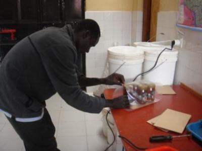
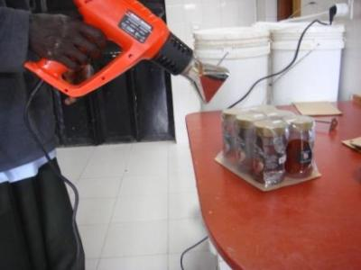
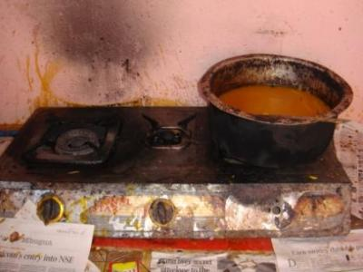
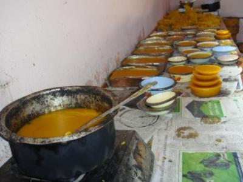
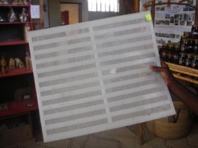
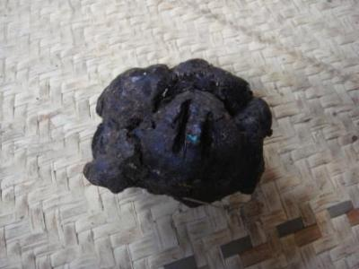

Bee products
{kind=link}
{kind=link}
{kind=link}
{kind=link}
Introduction - Market for Bee products
Honey
There is currently a very high demand for honey both in Kenya and overseas. Kenya is now licensed to export honey to the European Union. Market opportunity exists for beekeepers but lack of production is at present the main constraint in Kenyan beekeeping. Good quality honey can fetch a high price. Any farmer who has the good fortune and skill to obtain honey should have no trouble selling it. In general, if you present honey to the consumer in a clean, unspoiled condition, the price will be higher. Beekeepers should aim for the highest grade of honey to maximise returns from beekeeping. Honey in Kenya is sold in the following grades:
- Crude honey. This is a mixture of ripe and unripe honey. At harvesting time, the wax, honeycomb, and bee-and-brood comb are all mixed into one container. This container is often an old tin. Crude honey is used mainly for brewing local beer because quality requirements are not very strict. The demand for this type of honey is high.
- Semi-refined honey. Semi-refined honey is generally the liquid honey that remains when you skim wax off the top of crude honey. Honey sinks to the bottom as it is heavier. Semirefined honey still contains particles of wax and other debris such as bees' legs. It can be stored for the beekeeper's own use or it can be refined further and packed for sale. It gains a higher price than crude honey.
- Refined honey. Refined honey is clean. You strain it to remove all particles of beeswax and other materials. Remember: refined honey is unchanged, it is only strained. Nothing else is added so it is still the pure honey that bees made in the hive.
- Chunk honey. Whole combs of capped honey can be harvested carefully from the beehive. You can cut up pieces of the comb and put them into jars of liquid honey. This gives the consumer a feeling that the honey is real and not adulterated with sugar. Chunk honey can fetch a higher price than refined honey.
- Comb honey. Honeycombs of capped honey that have a nice white capping can be cut up, placed on small trays, and covered with cling film. These are very marketable in Kenya and command a very high price in the market, particularly in affluent Nairobi suburbs and other towns. This product should be the ultimate aim of all beekeepers with access to these markets. This product is priced per gram.
Beeswax
Most people in Kenya throw away wax combs upon harvesting or after honey extraction. Beekeepers do not know its value. Local villages use beeswax in very limited ways, e.g., for shoe repairs by cobblers. Some companies such as Bata (shoe company) and Kiwi (shoe polish company) purchase beeswax, which they often obtain from miti ni dawa (honey beer) brewers. You leave the wax after brewing beer from crude honey, which contains honeycombs. Baraka Agricultural College buys clean beeswax cakes from other buyers.
Propolis
Export markets for propolis exist. People use it as medicine, selling it as capsule, ointment, or tincture (dissolved). You can chew propolis raw as medicine for the throat. It is on sale in this form in very limited quantities in Nairobi. When harvesting, simply scrape off propolis and store in an airtight container. You can also try making medicine from propolis, e.g., propolis ointment.
Source: This information is taken from the book "A Beginner's Guide to Beekeeping in Kenya" from Thomas Carroll (2006).
Honey
Honey harvest
- Harvest honey during dry spells, i.e., January, February, March, July, August, September, November, and December.
- The harvest time in each area differs, so check the right time in your area. In areas where there are dominant bee plants like coffee, sunflower, etc., you should harvest after the flowers wither.
- Regular inspection of hives during nectar flow will ensure that the beekeeper harvests as soon as honey is ready.
- Do not harvest unripe honey.
- Ideal harvesting time of the day is from 5.30pm to 7.30pm.
How to harvest honey:
- Ensure you are sting-proof by putting on protective clothing.
- You will need a smoker in good working condition and a clean and dry plastic bucket with lid for storing honey.
- Smoke the entrance of the hive with about eight to 10 puffs and then gently lift the lid and smoke again. Leave hive for a minute or two before opening lid to allow smoke to affect bees. Smoke causes bees to engorge themselves with honey making it difficult for them to bend and sting. (They become too full!)
- Very gently tap top bars with a hive tool. A hollow sound will indicate where there is no comb.
- Remove top bar from the hive that has no comb attached, so you can examine the rest of bars in the hive. Honeycombs are usually at the end of the hive opposite the entrance. Select combs that are 3/4 or more sealed or capped full of honey. (These combs are said to be ripe or have a low moisture content, <19%, which ensures that honey will not ferment later when bottled. Leave combs with brood and pollen for future production of honey.)
When harvesting a comb:
- Brush bees gently from the comb using a bee brush. You can cut the harvested comb from the top bar to fall into the bucket.
- Replace lid of bucket to prevent bees from entering with the honey.
- Return top bar, minus comb, to the hive.
- As an alternative, place the whole comb and top bar (after brushing bees off) in another empty hive or catcher box where you can take it away later for comb honey. Fix spare top bar in place of the one removed.
Gentle smoking is a continuous process during harvest time to control bees. It is important to avoid smoking the honey directly or excessively because it can damage honey flavour. After harvesting, replace the first bar and cover hive with the lid. Make a final smoke before you leave to keep bees away from the harvester and to prevent them from following him/her all the way home. Remember to move through a bushy area first to get rid of bees.
Honey Processing
Honey processing is the action of preparing honey to improve its shelf life and meet the customer's and consumer's preferences. The main methods of honey processing are: Honey straining:
This is done soon after harvesting before honey granulates because granulation makes straining difficult. Staining must be carried out in a room free from robber bees. On large or small scale honey production honey straining can be done using
(1) a honey press,
(2) a filter tank,
(3) a bamboo honey strainer,
(4) a perforated plastic basin.
How to do (using a honey press):
- Put the straining bag into the honey press
- Break combs of honey into small pieces and put them into the straining bag
- Close the honey press and press combs with the use of either the screw- type honey press or jack-type honey press
- Collect the strained honey in a plastic container that is placed under honey press opening
- Leave the strained honey in the container to settle and allow beewax particles to float on top
- Skim out floating beeswax particles in order to obtain clean honey to be packed for marketing or home consumption.
N.B. Two people are better than one when harvesting or carrying out any bee operations. Two smokers in operation are also better than one to ensure a continuous supply of smoke for subduing bees. Sufficient smoke is very important when working aggressive bees.
How to refine honey
Remove wax capping from combs using a knife to cut off the capping.
Break combs into smaller particles and sieve them through a net or nylon fabric into a plastic container (See Photo 36.) The sieving process can take a few days. Cover sieved honey with a lid and keep in a dry room away from bees.
You can place the bucket in sunshine for two or three hours to heat honey gently so it flows freely.
Warning: NEVER boil honey as this destroys its flavour and medicinal characteristics!
Once honey has drained through the cloth and settled at the bottom of the bucket (usually after 2 days or so), use a jug to pour it into honey jars for sale. For wax remaining behind on the straining cloth, squeeze out any remaining honey and process leftover wax.
Packaging and Marketing
Package honey in either plastic or glass jars, which should be clean and dry. 454 g jars are available in Kenya from Nairobi suppliers as are plastic trays for selling comb honey.
Labelling of honey must include:
- net weight of honey
- name and address of producer
- country of origin (Kenya)
- description of contents, e.g., 'pure honey'
Initially you can make a simple label by hand or on a computer, which you can then photocopy. You can have a more attractive label printed later, but this is costly and requires many jars to spread the cost. Some people use Kasuku/Kimbo plastic containers or tree top bottles (700ml) to sell honey. Metal paint tins (mikebe ya rangi) are not good. Honey is acidic and can eat the metal and spoil the honey.
|  |
| Packaging honey jars |
| (c) S. Fontana, Biovision
|
|  |
| Sealing package of honey jars |
| (c) S. Fontana, Biovision
|
Where to sell honey
You can sell your bottled and labelled honey directly to shops. Build up a name for supplying the right quality, in the right quantity, at the right price, on time. Many beekeepers develop a reputation for beekeeping and people flock to their homes to buy honey directly. If you are enterprising, you can even set up a shop of your own selling bee products. You could also buy and sell honey from other beekeepers.
A shop or kiosk located in the right place such as the market or along a busy route can attract many customers.
You can also consider the option of forming a beekeeping association to market products of farmers in your area. Examples are the Kakamega Forest Beekeepers Association and the Transmara Association of Beekeepers.
You can also consider the option of starting a cooperative. An example of a successful beekeeping cooperative is Ruai Beekeeping Cooperative Society in Naru Moru, which markets eight tonnes of honey per annum collectively.
The advantage of farmers marketing together is fixed costs, e.g., transport, can be spread over a larger quantity of honey reducing cost. Collective selling gives farmers access to higher priced markets such as Nairobi.
Whatever type of honey you produce, you can easily find a market for it in Kenya and the price you receive will compare favourably with that available elsewhere in the world.
Source: This information is taken from the book "A Beginner's Guide to Beekeeping in Kenya" from Thomas Carroll (2006).
Beeswax
Beeswax is a product of the beehive. For every 100 kgs of honeycomb, you can get about eight to 10 kgs of beeswax.
Honeybees secrete beeswax in the form of thin scales. 12- to 17-day-old worker bees produce them through glands on their ventral (stomach) surface. Honeybees use beeswax to build honeycomb cells in which they raise their young and store honey and pollen.
To produce wax, bees must consume about eight times as much honey by mass. Estimates are that bees fly 150,000 miles to yield one pound of beeswax or 530,000 km/kg.
Beeswax is extracted from combs of bees. It is used to make candles, shoe polish and water proofing materials. In a newly installed KTBH (Kenya Top Bar Hive), the wax is applied on top-bars to attract bees to the hive and also acts as comb foundation. Beeswax is also used to encase human drugs to prevent degradation by stomach enzymes. It is also used in the cosmetic industry.
How to extract wax from combs
Your wax block is now ready for sale or for further use. Wax currently sells in Kenya at a price of about KSH 100 to 150 per kilogramme or more depending on the demand.
Recipes
How to make beeswax candles:
The basic elements of a candle are the solid wax as fuel for the flame and a wick, which serves to bring the molten wax to the flame. Oil lamps work on the same principle, but they need a container to hold the liquid fuel.
There are various pigments available from specialty suppliers for colouring wax and some natural dyes will also work. Regular paint pigments are often insoluble in fat or burn incompletely and so should not be used. Normal food colouring does not work very well as it will leave residues, might clog the wick or produce stains. If only applied as a thin outer layer it may be acceptable but special fat soluble pigments give much better results.
|  |
| Melting wax |
| (c) S. Fontana, Biovision
|
|  |
| Melted wax in moulds |
| (c) S. Fontana, Biovision
|
How to make beeswax furniture/ shoe polish:
- 200 g Beeswax
- 100 g Turpentine
- 50 g Baby oil
1) Grate beeswax into flakes.
2) Gradually add turpentine to soften wax.
3) Add oil and mix.
4) Store in a tin with a tight-fitting top or in a jar.
Tip: To soften the thread for easier sewing of shoes, leather and other thick materials, pull thread through small block of beeswax. The wax stiffens and smoothes the thread.
Propolis
Propolis is a sticky substance collected by bees from buds or bark of trees.
Records show that propolis contain:
- >55% resins and balsams
- >25% waxes
- 10% essential oils
- >5% pollen
- >5% other materials
Bees use the material for reducing the size of the hive entrance, filling cracks, polishing the interior of the hive, strengthening comb attachment, killing intruders by covering them and as barriers against ants (nest defense). Stingless honey bees store lumps of propolis on hive corners inside the hive for emergency use.
Propolis has also been used in human medicine and for veterinary purposes. It has antibiotic properties thereby inhibiting the growth of microorganisms. It is used for making adhesives e.g. glue, wood pastes for sealing leaking roofs and cracks on wooden furniture. When chewed it heals backaches. Propolis plays an essential role in the antimicrobial defense of some trees, as they control many pathogenic microorganisms such as fungi, bacteria and viruses.
Note: Propolis gathering and storing by honeybees can be artificially influenced by slightly enlarging spaces in the hive parts like entrance, between the top bars/frames and top cover, and between the floor board and the hive body only during honey flow period.
When harvesting propolis, the beekeeper should:
- Use a hive tool to scrap-off propolis smears and lumps from hives parts, without including hive paints and without damaging the hive boards.
- Be careful not to drop it because soil and other debris will stick to it
- Keep the collected propolis in an air tight and non corrosive container to retain its quality.
|  |
| Special plastic sheet for propolis production (same bis as beehive) |
| (c) S. Fontana, Biovision
|
|  |
| A piece of raw propolis |
| (c) S. Fontana, Biovision
|
Raw propolis
Propolis is ready for sale after harvesting without further processing. Unprocessed propolis can be used in chunks, or it may be frozen and broken or ground to fine powder. Large pieces of pure propolis can be chewed, but it should only be consumed in small quantities, since it may cause stomach upsets. Smaller pieces and powders can be taken in capsules or mixed with food or drinks.
How to make propolis extract
Ingredients:
Propolis
96% Ethanol
A dark flask or bottle (the dark colour protects the content from light/sunlight)
1) Fill half of the bottle with alcohol (90%-alcohol)
2) Cut propolis into small pieces and fill the rest of the bottle with them
3) Shake the bottle everyday for about 3 weeks
4) Sieve it.
Closing the bottle with a cloth for a while allows evaporation, so that the propolis extract will be get more concentrated.
(Formula: R. Gloor, Cabesi Project, West Pokot)
How to make propolis cream
Ingredients:
120 g wax
480 g olive or peanut oil
30 g propolis
Small tins
1) Melt the wax and oil together on a double pan
2) Add propolis and stir it throughly until it cools
3) Pour the mixture on small tins
(Formula: R. Gloor, Cabesi Project, West Pokot)
How to make propolis ointments
1) Simple Vaseline-based ointment
Ingredients (in parts by weight):
1 Propolis extract
9 Vaseline or other petrolatum
- Prepare a propolis extract in 96% ethanol to a concentration of 10% propolis then reduce the solvent to obtain 30% propolis content by weight.
- Mix the extract with a small quantity of the Vaseline.
- Once the mix is homogeneous or well emulsified the rest of the Vaseline can be added slowly. If not mixed well the propolis extract will separate and leave dirty looking droplets in the cream.
- Warming in a water bath will improve mixing. Using an emulsifier or electric mixer makes mixing easier.
The propolis extract may make up to 10% (by weight) of the final ointment. 10% of lanoline can also be melted with the Vaseline (using a water bath) following the same procedures as for the propolis.
2) Simple ointment based on vaseline or animal fat
This ointment can be used for application on cuts, abscesses and festering wounds in animals and external ulcers and burns in humans (see also cabesi recipe of propolis cream above).
Ingredients (in parts by weight):
10 Vaseline or animal fat
1 Propolis
- Bring the vaseline or fat to boiling point, then cool to 50-60 degC
- Add propolis, heat to 70-80degC, stir for 10 minutes and cover for 10 minutes.
- Filter through one layer of thin cloth into clean container and seal.
It is ready as soon as it has cooled, but will not store for very long, particularly if animal fats are used.
3) Simple oil-based ointment
Ingredients (in parts by weight):
2 Propolis ethanol extract, 20% (s. method above)
1 Beeswax
7 Lanolin
10 Butter of palm, cacao, kerate or similar
- Melt the beeswax in a water bath, slowly stir in the melted lanolin and mix well.
- While the mixture is cooling mix in the butter.
- The propolis extract is best mixed with a small amount of butter and added to the rest of the mixture once the latter has cooled to less than 40degC.
Royal jelly
Royal jelly, also known as bee milk, is secreted by 5-15 days old worker honey-bees. It is produced by the hypopharyngeal gland (sometimes called the brood food gland) of young worker (nurse) bees, to feed young larvae and the adult queen bee.
Royal jelly is always fed directly to the queen or the larvae as it is secreted; it is not stored. This is why it has not been a traditional beekeeping product. The only situation in which harvesting becomes feasible is during queen rearing, when the larvae destined to become queen bees are supplied with an over-abundance of royal jelly. The queen larvae cannot consume the food as fast as it is provided and royal jelly accumulates in the queen cells. The exact definition of commercially available royal jelly is therefore related to the method of production: it is the food intended for 4-5 days old queen bee larvae.
Naturally produced royal jelly is too little for commercial purposes. However, royal jelly production can be done using artificial queen rearing with either plastic or beeswax queen cups in stinging-bees using movable-comb hives (frame or top bar hives). This is done during honey flow period when bees are are actively collecting nectar (honey) and pollen.
How to produce royal jelly successfully (the "Doolittle" method)
After 3 days, the accepted queen cells are filled with royal jelly (about 148-280 mg per cell or 450 g per 1000 queen cells).
- Cut the queen cells with a sharp thin bladed knife to the level of the royal jelly, on the fourth day of the graft.
- Remove the queen brood with forceps and suck off the royal jelly with a syringe.
How to strain and store royal jelly
- Store the harvested royal jelly in dark coloured bottles with wide opening and cover them with air tight lids. Note: Sunlight destroys some nutritive elements and vitamins in royal jelly.
- Strain the collected royal jelly through a 40-mesh per cm strainer to remove any unwanted materials such as pollen particles, wax or larval moults.
- Put the strained royal jelly in hte dark bottles with wide opening and store it in a refrigerator at 1.7degC for immediate consumption or sale, and in a deep freezer for a longer storage period.
- The process is repeated using the same queen cups.
Source: Kihwele et al. (2001)
Pollen
Botanically, pollen is a higher plant's male reproductive element, produced in the anthers. It is transferred by either gravity, wind, animals, birds or insects to the plant's female reproductive organs stigma, to fertilize ovules (seed-embryo) to develop into viable seed in the fruit.
Pollen in honey is used to identify species of bee fodder plants. In beekeeping, pollen is an essential part of bee's diet as it contains protein, fat, minerals, vitamins and enzymes. It is collected from the flowers by worker bees and brought to the hive in form of pellets, where it is mixed with honey (bee bread) ready for consumption or storage.
Bee bread is consumed by humans by chewing the pollen comb. Pollen in the form of pellets is collected by the beekeeper with an aid of a pollen trap. Pollen traps are of various types . Pollen should be collected from the pollen trap every after 2-3 days to prevent fermentation or infestation by pests. After collection, it is dried, winnowed and packed into clean air tight containers for consumption or sale to food processors.
Information Source Links
- Carroll, Thomas (2006). A Beginner's Guide to Beekeeping in Kenya. Legacy Books, Nairobi, Kenya. ISBN: 9966-7078-6-7
- Kihwele, D.V.N., Massawe, A.J., Lwoga, P.D. and Burton, S. (2001). Beekeeping in Tanzania. Ministry of Natural Resources and Tourism, Dar-es-salaam, Tanzania.
- Krell, R. (1996). Value-added products from beekeeping. FAO Agricultural Services Bulletin No.124. ISBN: 92-5-103819-8
Contacts in Kenya
- African Beekeepers Limited
Industrial Area - P.O. Box 3752-00506 - Nairobi Mobile: (254) (0)722 700226
Remarks: It manufactures equipment and markets honey.
- African Union
Maendeleo Ya Wanawake House - Nairobi
Remarks: It has an interesting collection of beekeeping books in its library.
- Apiculture Division - Ministry of Livestock and Fisheries Development, Hill Plaza Building
P.O. Box 34188-00100 - Nairobi
Telephone: (254) (0)20 2722601/2722637 / Fax: (254) (0)20 2728609
Remarks: Contact for information and advice or get in touch with your local District Beekeeping Officer. There's one in every district.
- Baraka Agricultural College - P.O. Box 52 - Molo
Telephone: (254) (0)51 721091/ Email: baraka@sustainableagri.org
Website:www.sustainableagri.org
Remarks: Contact for bee equipment, advice, training courses, honey, and beeswax marketing
- General Plastics Limited
P.O. Box 10032 - Nairobi
Enterprise Road off Mombasa Road - Industrial Area near Hillock Inn
Telephone: (254) (0)20 530032/3/4/5
Remarks: It supplies plastic jars and lids for packing honey.
- Honey Care Africa Limited
Muringa Avenue, Jamhuri Park - Nairobi
Telephone: (254) (0)20 574448
Remarks: It promotes Langstroth hives. It also buys and markets honey.
- ICIPE (International Centre for Insect Physiology and Ecology)
P.O. Box 30772-00100 - Nairobi
Telephone: (254) (0)20 8632000 / Fax: (254) (0)20 8632001/8632002
Remarks: It has a commercial insect section dealing with beekeeping E-mail: dg@icipe.org
- Kerio Valley Development Authority
KVDA Plaza - P.O. Box 2660 - Eldoret
Telephone: (254) (0)53 2063361/ Email: kvda@kenyaweb.com
- National Beekeeping Station - Apiculture and Emerging Livestock Division
Ministry of Livestock and Fisheries Development Lenana
P.O. Box 34188-00100 - Nairobi
Telephone: (254) (0)20 564302
Remarks: Check out for its library, bee equipment, and advice.
- Ruai Beekeeping Cooperative Society
P.O. Box 8 - Naru Moru
Remarks: This is a great example of collective marketing of bee products in Kenya. It markets up to 8 tonnes of honey per year.
- Self-Help Development International Kenya
2nd Floor, Catholic Diocese of Nakuru Building
Stadium Road off Kenyatta Avenue
Telephone: (254) (0)51 2212291
Email: kenya@shdi.org
Remarks: The agency currently promotes beekeeping in the Gilgil area.
- Strengthening Informal Sector Training and Enterprise (SITE)
Jabavu Road, Nairobi
Telephone: (254) (0)20 2718155
Remarks: It deals in training and support to beekeeping and bee equipment.
- The Kenya Beekeepers Association
c/o The National Beekeeping Station
P.O. Box 34188-00100 - Nairobi
- The Kenya Honey Council - P.O. Box 271-00606 - Sarit Centre, Nairobi
Telephone: (254) (0)20 4183120
Email: info@kenyahoneycouncil.org
Website: www.kenyahoneycouncil.org
Remarks: An umbrella body representing different stakeholders in the Kenya beekeeping sector.